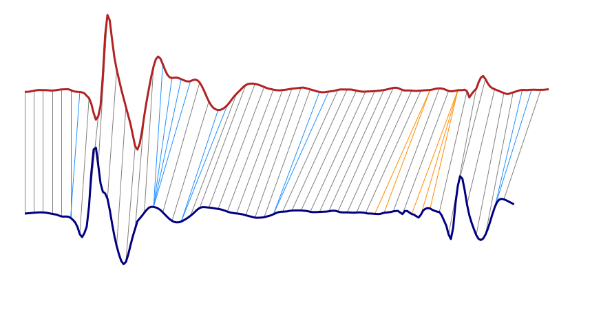
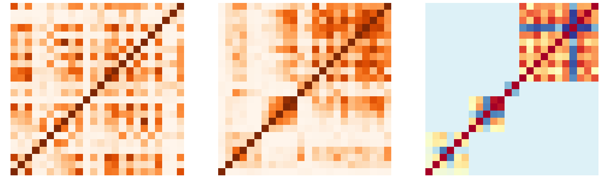
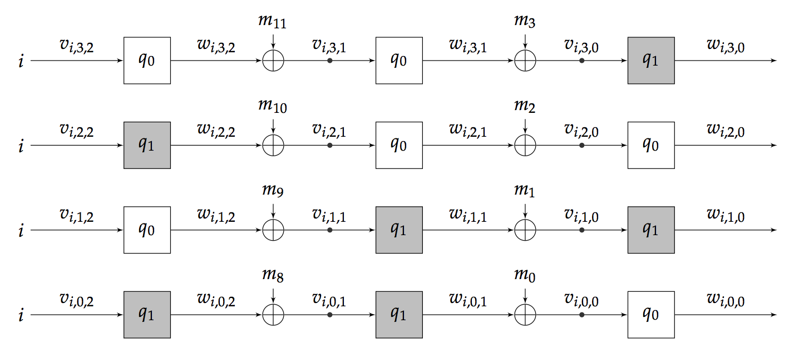
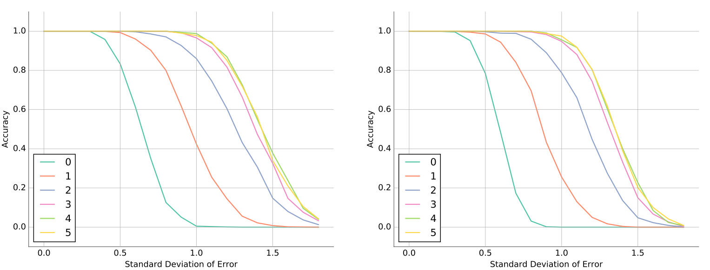

About Me
Hi! I'm Jose Javier. As of Fall 2017 I am a PhD student in Computer Science at MIT. My specialization is Machine Learning and I work at the CSAIL lab in John Guttag's reserch group. My main interests lie in automatic feature extraction and deep learning architectures.
I received my Bachelor's Degree in Telematics Engineering from the Universidad Pontificia Comillas ICAI. I spent my senior year in an exchange program in Computer Science at the University of Michigan, Ann Arbor.
My research interests include Machine Learning, Deep Learning, Computer Vision, Optimization and Algorithms. I am very interested in automating non-trivial tasks I also enjoy working with microprocessors and embedded devices to automate things and make life simpler.
On my spare time I enjoy reading, writing about math and code, watching MOOCs, tinkering with electronics and solving all kinds of geometric puzzles.
Experience
I've done research and internships to get a better feel for what fields I am interested in. Here's a quick summary of what I've done, as well as a link to my resume:
CERN Openlab
Summer Student
I worked in the GeneROOT project in collaboration with King's College bioinformatics. I developed C++ software to store and access Sequence Aligment/Map Data using CERN's ROOT Framework for High Energy Physics. I benchmarked the tools using Python, using statistical analysis to improve read speed by over 15 times.
University of Michigan CSE
Research Assistant
As a member of the Machine Learning for Data Driven Decisions Laboratory I developed a Heart Sound Classification algorithm based on Temporal Alignment Techniques and MFCC, achieving a 82.4% accuracy in the hidden data. I presented my work at Computing in Cardiology 2016.
Universidad Pontificia Comillas
Research Assistant
Using Android and the Google Glass prototype, I designed a QR-Based system for people with different disabilities. The application uses Google Glass as a platform to interact with a number of interfaces and it is now being used by children with special needs at a Spanish institution.
Extreme Networks
Software Engineer
As a Serive Architecture Development member, I worked with the integration of several third-party modules to the NetSight network monitor. I was responsible for producing software filters for the Paloalto Firewall, reducing unwanted requests by 68%
Publications

Heart Sound Classification based on Temporal Alignment Techniques
The 2016 PhysioNet/CinC Challenge aims to encourage the development of algorithms to classify heart sound recordings collected from a variety of clinical or nonclinical (such as in-home visits) environments.
We use DTW (Dynamic Time Warping) to compare heart
sounds within and across subjects. These DTW
based features, coupled with widely used spectral MFCC
coefficients, serve as input to a linear SVM. Applied to
the held-out test set our classifier obtained a test score of
82.4%, suggesting that temporal alignment techniques can
effectively reduce the effects of inter-patient variability and
mitigate the differences introduced by heterogeneous data
collection environments.
Jose Javier Gonzalez, Cheng Perng Phoo, Jenna Wiens
Computing in Cardiology 2016


A Simple Power Attack in the TwoFish Key Schedule
This paper introduces an SPA power attack on the 8-bit implementation of the Twofish block cipher. The attack is able to unequivocally recover the secret key even under substantial amounts of error. An initial algorithm is described using exhaustive search on error free data. An error resistant algorithm is later described. It employs several threshold preprocessing stages followed by a combined approach of least mean squares and an optimized Hamming mask search. Further analysis of 32 and 64-bit Twofish implementations reveals that they are similarly vulnerable to the described SPA attack.
Jose Javier Gonzalez Ortiz, Kevin J. Compton
arXiv 2016
Portfolio
This are some of the projects I have worked on either as class projects or in my spare time. Check them out!

 orcid.org/0000-0001-5892-1150
orcid.org/0000-0001-5892-1150